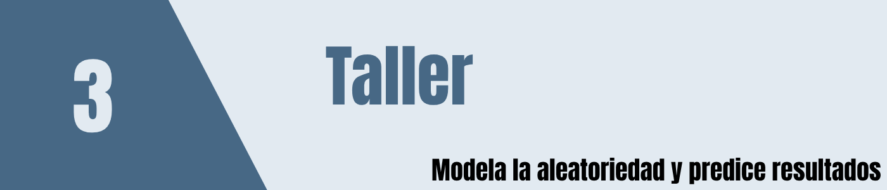

Los siguientes minicasos están construidos a partir de los ejercicios de simulación presentados en el capítulo 4 de Estadística para ingenieros y científicos de Navidi. Se conserva la estructura probabilística y el objetivo estadístico de cada ejercicio, pero se reformulan como situaciones de decisión, análisis y modelación.
El propósito no es únicamente practicar la generación de números aleatorios. En cada minicaso el estudiante debe identificar:
Esta lógica será posteriormente utilizada en la construcción de gemelos digitales, donde un sistema real se representa mediante un modelo computacional que permite reproducir su comportamiento, experimentar con escenarios y evaluar decisiones.
Recomendación general. Salvo que se indique algo diferente, utilice al menos 1 000 réplicas y establezca una semilla con
set.seed()para garantizar la reproducibilidad.
Una empresa fabricante de equipos industriales recibe un componente crítico de dos proveedores. El proveedor A presenta históricamente una probabilidad de defecto de \(0.025\) por pieza, mientras que para el proveedor B la probabilidad es \(0.05\). Cada despacho contiene 100 piezas de cada proveedor.
El responsable de calidad desea construir un modelo de simulación que permita anticipar el comportamiento de los despachos antes de modificar la política de abastecimiento.
Un equipo de ingeniería electrónica está evaluando dos diseños alternativos de un circuito semiconductor. La duración del diseño 1, medida en horas, puede modelarse mediante una distribución exponencial con parámetro \(\lambda=10^{-4}\), mientras que la duración del diseño 2 sigue una distribución lognormal con parámetros \(\mu=6\) y \(\sigma^2=5.4\).
Antes de seleccionar un diseño para las siguientes pruebas de laboratorio, los ingenieros quieren comparar ambos mediante simulación.
Una planta fabrica placas rectangulares para un dispositivo de precisión. Debido a la variabilidad del proceso, la longitud \(X\) de una placa se distribuye como
\[ X \sim N(2.0,0.1^2), \]
mientras que el ancho \(Y\) se distribuye como
\[ Y \sim N(3.0,0.2^2). \]
Se supone que longitud y ancho son independientes. El área de una placa terminada está dada por
\[ A=XY. \]
El ingeniero de proceso necesita conocer la variabilidad del área sin recurrir inicialmente a una aproximación analítica.
\[ P(5.9<A<6.1). \]
Un cable de seguridad está compuesto por cuatro alambres. La fuerza de ruptura de cada alambre se modela mediante una distribución normal con media de 10 kN y desviación estándar de 1 kN.
El procedimiento de diseño establece que la fuerza del cable completo se aproxima mediante el método del cable cuadrado: la fuerza del cable es igual a la resistencia del alambre más débil multiplicada por el número de alambres.
Por tanto, si \(F_1,\ldots,F_4\) son las resistencias individuales,
\[ F_{\text{cable}}=4\min(F_1,F_2,F_3,F_4). \]
\[ P(F_{\text{cable}}<28)<0.01. \]
Estime esta probabilidad y determine si el requisito técnico se cumple. 5. Analice por qué el comportamiento del elemento más débil es determinante en este sistema. 6. Proponga cómo representar los cuatro alambres y su degradación en un gemelo digital del cable.
Un sistema óptico utiliza dos láseres que operan de manera independiente. La duración, en horas, de cada láser sigue una distribución lognormal con
\[ \mu=8, \qquad \sigma^2=2.4. \]
El equipo de mantenimiento desea conocer la confiabilidad conjunta de los dos dispositivos para planificar inspecciones y reemplazos.
Un equipo de analítica desea demostrar cómo una cantidad matemática puede estimarse mediante experimentación computacional. Para ello se considera un cuadrado de lado 1 que contiene un cuarto de círculo de radio 1.
Se generan puntos aleatorios \((X,Y)\) uniformemente distribuidos en el cuadrado. Un punto pertenece al cuarto de círculo cuando
\[ X^2+Y^2\leq 1. \]
Como la razón entre el área del cuarto de círculo y la del cuadrado es \(\pi/4\), la proporción de puntos que caen dentro del círculo puede utilizarse para estimar \(\pi\).
\[ \widehat{\pi}=4\frac{\text{número de puntos dentro del círculo}}{\text{número total de puntos}}. \]
En una red de computadores móviles se modela el movimiento de un dispositivo mediante trayectorias aleatorias dentro de una región cuadrada de lado 1. Para representar un desplazamiento elemental se seleccionan independientemente dos puntos:
\[ (X_1,Y_1), \qquad (X_2,Y_2), \]
donde las cuatro coordenadas siguen una distribución uniforme entre 0 y 1.
La longitud de la trayectoria es
\[ L=\sqrt{(X_2-X_1)^2+(Y_2-Y_1)^2}. \]
Los ingenieros necesitan estimar características de estas trayectorias para incorporarlas posteriormente a un simulador de movilidad.
Un sistema técnico posee varios componentes y los ingenieros estudian dos alternativas de rediseño. La primera consiste en reemplazar el componente A por uno nuevo cuya vida útil sigue una distribución
\[ A_{\text{nuevo}}\sim \text{Exp}(1/2), \]
mientras que la segunda consiste en reemplazar el componente B por otro cuya vida útil sigue
\[ B_{\text{nuevo}}\sim \text{Exp}(1/3). \]
La estructura restante del sistema y las distribuciones de sus componentes corresponden al modelo de confiabilidad estudiado previamente.
El equipo no desea tomar la decisión utilizando únicamente la vida media de los nuevos componentes, pues diferentes criterios de confiabilidad pueden conducir a decisiones diferentes.
Un equipo industrial está formado por dos componentes, A y B, conectados en serie. El sistema funciona únicamente mientras ambos componentes estén operativos.
La duración del componente A, en meses, sigue una distribución lognormal con
\[ \mu=1,\qquad \sigma=0.5, \]
y la duración de B sigue una distribución lognormal con
\[ \mu=2,\qquad \sigma=1. \]
Si \(T_A\) y \(T_B\) representan los tiempos de vida, entonces
\[ T_{\text{sistema}}=\min(T_A,T_B). \]
Un sistema de respaldo está formado por dos subsistemas conectados en serie. Cada subsistema contiene dos componentes conectados en paralelo.
El primer subsistema contiene A y B y sólo falla cuando ambos han fallado. El segundo contiene C y D y se comporta de la misma forma. El sistema completo falla cuando cualquiera de los dos subsistemas deja de funcionar.
Los tiempos de vida, en meses, son independientes y se distribuyen como:
\[ A\sim \text{Exp}(1),\qquad B\sim \text{Exp}(0.1), \]
\[ C\sim \text{Exp}(0.2),\qquad D\sim \text{Exp}(0.2). \]
Por tanto,
\[ T_{AB}=\max(T_A,T_B), \]
\[ T_{CD}=\max(T_C,T_D), \]
y
\[ T_{\text{sistema}}=\min(T_{AB},T_{CD}). \]
Un laboratorio de arqueometría utiliza carbono-14 para estimar la antigüedad de una pieza. Si \(X\) representa el número de partículas emitidas durante diez minutos por un fragmento óseo de 10 000 años que contiene 1 g de carbono, se supone que
\[ X\sim \text{Poisson}(45.62). \]
Para cada valor observado \(X\), la edad estimada, en años, se calcula mediante
\[ \widehat{t}= -\frac{\ln(15.3)-\ln(X/10)}{0.0001210}. \]
El laboratorio desea estudiar la incertidumbre introducida por la variabilidad aleatoria del conteo de partículas.
\[ P(|\widehat{t}-10000|\leq1000). \]
\[ P(|\widehat{t}-10000|>2000). \]
Un equipo de análisis debe estimar el centro de una población normal \(N(0,1)\). Dos analistas proponen estimadores diferentes: uno recomienda la media muestral y el otro la mediana muestral.
Para comparar su precisión se realizará un experimento de simulación utilizando muestras pequeñas de tamaño
\[ n=5. \]
Un analista dispone únicamente de la siguiente muestra de ocho tiempos observados:
\[ 2.74,\;6.41,\;4.96,\;1.65,\;6.38,\;0.19,\;0.52,\;8.38. \]
Se supone que los datos provienen de una distribución exponencial \(\text{Exp}(\lambda)\) y se desea estimar el parámetro mediante
\[ \widehat{\lambda}=\frac{1}{\bar X}. \]
Como sólo se dispone de una muestra pequeña, el analista decide utilizar bootstrap para estudiar el sesgo y la incertidumbre del estimador.
\[ \widehat{\lambda}^{*}=\frac{1}{\bar X^{*}}. \]
\[ \widehat{\operatorname{sesgo}} = \overline{\widehat{\lambda}^{*}}-\widehat{\lambda}. \]
Los trece minicasos anteriores muestran diferentes usos de la simulación. Sin embargo, todos pueden organizarse mediante una misma estructura conceptual:
\[ \boxed{ \text{Sistema real} \rightarrow \text{modelo probabilístico} \rightarrow \text{generación de escenarios} \rightarrow \text{simulación} \rightarrow \text{indicadores} \rightarrow \text{decisión} } \]
En un gemelo digital, esta estructura se amplía al incorporar información del sistema real y actualizar el modelo a medida que se reciben nuevos datos.
Seleccione uno de los minicasos anteriores y prepare una primera especificación de un gemelo digital respondiendo:
Finalmente, represente la arquitectura inicial mediante:
\[ \boxed{ \text{Datos del sistema} \longrightarrow \text{modelo} \longrightarrow \text{simulador} \longrightarrow \text{indicadores} \longrightarrow \text{visualización} } \]
Esta arquitectura servirá como punto de partida para transformar posteriormente el modelo de simulación en un gemelo digital interactivo.